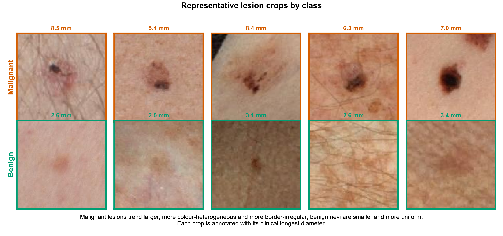
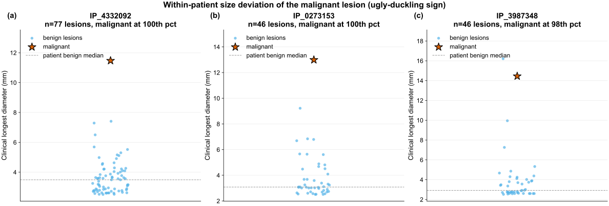
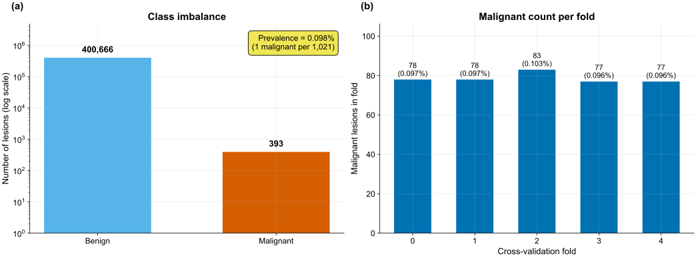
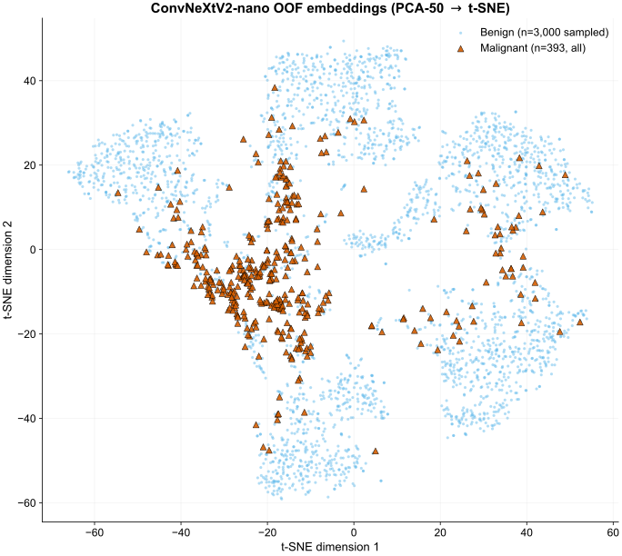
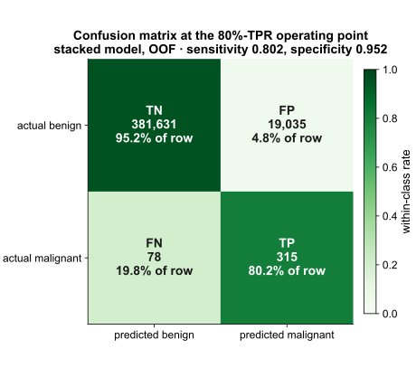
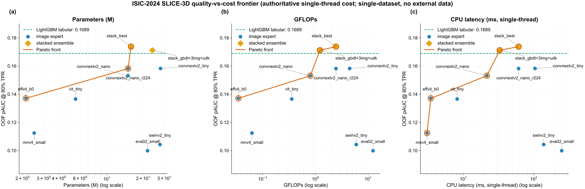

Pakistan.AI
ISIC-2024 SLICE-3D
Skin Cancer Detection
Final Project · Neural Networks
Raja, Muhammad Junaid Ali AsifM11217073
Sultan, AdilM11217078
Hassan, Shahzaib AhmedM11217081
Instructor Prof. Hsuan-Ting Chang
June 18, 2026
ISIC-2024 SLICE-3D · Pakistan.AI
Clinical Task
Melanoma Triage From Total-Body Photography
- Melanoma is highly survivable when excised early; mortality rises sharply once it metastasises.
- The clinical bottleneck is triage: ranking which lesions warrant dermatologist review.
- ISIC-2024 frames this as a ranking task over lesions imaged by 3D total-body photography (TBP), not dermoscopy.
- Each lesion is a small square crop plus per-lesion tabular metadata.
Objective: rank a patient's lesions so the highest-risk are reviewed first, using only signals a routine total-body scan already captures.
ISIC-2024 SLICE-3D · Pakistan.AI
Dataset
SLICE-3D: 401,059 Lesion Crops
401,059
lesion crops
393
malignant
0.098%
prevalence
1,042
patients

Malignant crops (top) trend larger, more colour-heterogeneous and more border-irregular than benign nevi (bottom).
- Square TBP tiles, 61–239 px (median 131 px).
- 393 malignant against 400,666 benign.
- One cancer per ~1,021 crops — a 0.098% base rate.
- Lesion size and colour heterogeneity rise with malignancy, the first signal the experts exploit.
ISIC-2024 SLICE-3D · Pakistan.AI
Exploratory Analysis
What the Data Reveals
Patient structure: correlated lesions per patient

Ugly-duckling: the malignant lesion tops its patient's own size distribution

- Lesions are patient-grouped: 1,042 patients, median 241 crops each; the 259 malignant-carrying patients hold 39% of all crops.
- Patient-relative deviations (ugly-duckling) carry ~65% of GBDT gain; 45.7% of cancers fall in the top 10% of their own patient's lesion sizes.
- Head/neck site runs at ~7× the baseline malignant rate despite being the smallest site, a strong site prior.
- Hue tbp_lv_H alone reaches univariate AUC 0.81; malignant lesions are ~2× larger than benign.
ISIC-2024 SLICE-3D · Pakistan.AI
Evaluation
Class Imbalance and the Metric

Class counts (log scale) and the 77–83 malignant cases per fold.
- At 0.098% prevalence, plain AUC and accuracy reward the wrong region of the curve.
- Scoring is restricted to the high-sensitivity tail: TPR from 0.80 to 1.0.
- Range [0, 0.20]: random ≈ 0.02, perfect = 0.20.
$$ \mathrm{pAUC}_{80} = \int_{0.80}^{1.0}\!\big(1-\mathrm{FPR}\big)\, d(\mathrm{TPR}) $$
Official ISIC-2024 metric. Every number here is OOF pAUC@80%TPR on the same frozen folds.
ISIC-2024 SLICE-3D · Pakistan.AI
Validation
Patient-Grouped, Target-Stratified 5-Fold
5-fold rotation → out-of-fold (OOF) predictions
- StratifiedGroupKFold: grouped by patient, stratified on the label.
- No patient straddles two folds.
- One frozen folds.parquet; every model reads the identical split.
- Each fold holds 77–83 positives, so none is starved of signal.
Why it matters
If a patient's moles appear in both train and validation, the model memorises the person, not the disease, the source of the competition's public-to-private shake-ups.
ISIC-2024 SLICE-3D · Pakistan.AI
Approach
Two Experts and a Rank-Average Stack
SLICE-3D · 401,059 crops · 1,042 patients
→
Patient-grouped StratifiedGroupKFold · 5 folds · SEED=42 · frozen, no patient straddles folds
Tabular
Features: geometry · colour/hue · size ratios · 3D position · patient-relative ugly-duckling (pdev/prank/pxc) · per-fold target encoding
→
Bagged LightGBM (5-seed) + CatBoost, rank-blendOOF pAUC 0.16890
Image
convnextv2_nano @224 · neg-undersample ~1:1 · BCE+LS · EMA(0.995) · mixup · TTA
→
OOF malignancy prob (+ embedding)OOF pAUC 0.15821
Tabular OOF
0.16890
0.16890
+
Image OOF
0.15821
0.15821
→
Rank-average
param-free
param-free
→
Final OOF 0.17376
15.8M params · 2.46 GFLOPs · 61 ms CPU
15.8M params · 2.46 GFLOPs · 61 ms CPU
Tabular expert carries most of the score (0.16890); the image expert adds a complementary signal (0.15821); the param-free rank average lifts both to 0.17376. No external or synthetic data.
ISIC-2024 SLICE-3D · Pakistan.AI
Tabular Expertintrinsic + patient-relative features, bagged gradient boosting
- Intrinsic features: lesion geometry, colour, size ratios.
- Patient-relative deviations encode the ugly-duckling sign, a lesion that departs from its patient's own moles.
- 392 of 393 cancers share a patient with benign moles, so within-patient deviation is computable for nearly every positive.
- Bagged LightGBM ensembled with CatBoost; early-stop on pAUC@80%TPR.
Patient-relative features supply 6 of the top 7 by gain and account for ~65% of total feature importance.
| Configuration | OOF pAUC@80%TPR |
|---|---|
| Step 0: broken: is_unbalance + AUC early-stop | 0.09941 |
| Step 1: fixed early-stopping / objective | 0.11826 |
| Step 2: wide patient-relative features | 0.14420 |
| Step 3: bagged + cross feats + CatBoost | 0.16890 |
ISIC-2024 SLICE-3D · Pakistan.AI
Image Expertsmall ImageNet-pretrained backbones at 128–224 px
- Small pretrained backbones; ImageNet weights carry no skin-cancer labels, preserving the no-external-data claim.
- Per-epoch negative undersampling against 0.098% prevalence.
- BCE with label smoothing, classical transV2 augmentation, light EMA, and mixup.
- Each backbone emits an OOF malignancy probability plus an embedding, stacked into the GBDT.
Resolution and light regularisation on a small backbone is the sweet spot: convnextv2_nano gains +0.005 from 128 to 224 px; stronger EMA over-smooths and hurts.
| Backbone | pAUC |
|---|---|
| ConvNeXtV2-nano @224 | 0.15821 |
| ConvNeXtV2-tiny @224 | 0.15824 |
| ConvNeXtV2-nano @128 | 0.15311 |
| EfficientViT-b0 @128 | 0.13706 |
| ViT-tiny @128 | 0.13654 |
| MobileNetV4-small @128 | 0.11242 |
nano @224 matches tiny @224 at half the cost; chosen as the image expert.
OOF embedding t-SNE — the expert separates malignant from benign

ISIC-2024 SLICE-3D · Pakistan.AI
Combiner
Rank-Average Stack
$$ \hat s_i = \tfrac{1}{2}\Big( r\big(p^{\text{tab}}_i\big) + r\big(p^{\text{img}}_i\big) \Big),\qquad r(p_i)=\tfrac{\operatorname{rank}(p_i)}{N}\in(0,1] $$
Worked example — ranks rescue an under-ranked cancer
- Each expert's scores are rank-transformed, then equally averaged.
- Tabular and image make complementary errors; the average sits above both on every fold.
- Tabular 0.16890 + image 0.15821 → stack 0.17376.
Why trivial wins
A rank average has zero learned parameters, so it cannot overfit the 393 positives. A learned meta-stacker reaches only 0.17108; a learned per-lesion gate falls to 0.15007, below tabular alone.
ISIC-2024 SLICE-3D · Pakistan.AI
Results
Ranking and the Operating Point

Illustrative 80%-TPR point: 315/393 caught at 95.2% specificity. The score is pAUC@80%TPR — rank-based over the high-sensitivity band — so at 0.1% prevalence a large absolute false-positive count is intrinsic; a stronger model has fewer at the same sensitivity.
Stack, out-of-fold
- pAUC @ 80% TPR (max 0.20)0.17376
- ROC-AUC0.9666
- Average precision0.094
- Sensitivity / specificity @ op. point0.802 / 0.952
ROC-AUC is high, but at 0.098% prevalence precision is mathematically forced low, which is why scoring is pAUC@80%TPR, not precision or accuracy.
ISIC-2024 SLICE-3D · Pakistan.AI
Efficiency Frontier
Quality vs. Cost: Three Axes

OOF pAUC against parameters, GFLOPs and single-thread CPU latency. The small-backbone stack owns the knee; heavy models are dominated.
| Model | pAUC | Params (M) | GFLOPs | CPU (ms) | Pareto |
|---|---|---|---|---|---|
| Stack (rank-avg: GBDT + nano@224) | 0.17376 | 15.84 | 2.455 | 60.91 | Yes |
| Tabular GBDT (LightGBM + CatBoost) | 0.16890 | 0.86 | 0.000 | 0.02 | Yes |
| EVA-02-small @336 (heavy ViT, dominated) | 0.09984 | 21.74 | 12.409 | 249.18 | — |
ISIC-2024 SLICE-3D · Pakistan.AI
Ablations
Negative Results and Leaderboard Comparison
| Idea tried | Its pAUC | Beaten by | Honest finding |
|---|---|---|---|
| Learned per-lesion gate (MoE) | 0.15007 | 0.16890 (tabular) | loses to tabular alone |
| Meta-LGBM stacker | 0.17108 | 0.17376 (rank-avg) | loses to rank-average |
| + PCA image embeddings into GBDT | < 0.17376 | 0.17376 | embeddings hurt |
| Heavy backbones (SwinV2 / EVA-02) | 0.104 / 0.100 | 0.15821 (nano@224) | dominated, overfit at 393 pos |
| EMA 0.999 (over-smoothing) | ~0.146 | 0.15821 (EMA0.995) | stronger EMA hurts |
Every complexity increment lost on the frozen folds: each learned addition overfits the 393 positives or is dominated on cost.
| Solution | Ext. | Syn. | pAUC |
|---|---|---|---|
| 1st, Novoselskiy (EVA-02 + GBDT) | Yes | Yes | 0.17264 |
| 2nd, uchiyama33 | Yes | Yes | — |
| 3rd, kyohei-123 | Yes | Yes | — |
| Ours (single-dataset) | No | No | CV 0.17376 |
Champions used banned external dermoscopy and ~30k synthetic positives; their own ablation reports synthetic data added only +0.0007. Ours is OOF CV, not private LB.
ISIC-2024 SLICE-3D · Pakistan.AI
Scope
Constraints and Limitations
Self-imposed constraints
- No external data. SLICE-3D only, no ISIC-2019/2020, no PAD-UFES, no external dermoscopy.
- No synthetic lesions. Fabricated pathology is a label-validity hole in a medical task.
- ImageNet-pretrained encoders allowed: no skin-cancer labels, so the no-external-data property holds.
Limitations
- Only 393 positives bound model capacity; heavy backbones overfit.
- OOF pAUC is 0.17376; allowing the usual public-to-private drop, we estimate private ≈ 0.16.
- Precision at the operating point is low by construction at this prevalence.
ISIC-2024 SLICE-3D · Pakistan.AI
Closing
Conclusion
- A small, cheap stack reaches 0.17376 OOF pAUC on a leak-verified patient-grouped split.
- Patient-relative tabular features carry most of the score.
- A zero-parameter rank average beats every learned combiner.
- The result holds without external or synthetic data.
Claim
SOTA among single-dataset, no-external-data, no-synthetic solutions, reported on a quality-versus-cost frontier rather than a single leaderboard point.
At 393 positives, the efficient choices were not only cheaper, they were more accurate.
ISIC-2024 SLICE-3D · Pakistan.AI
Credits
Attribution and Lineage
Leaderboard solutions positioned against
- 1st — I. Novoselskiy: EVA-02 + EdgeNeXt fused with a GBDT stack; used external dermoscopy and ~30k synthetic positives (both banned here).
- 2nd — uchiyama33: image + tabular ensemble — source of the EMA + mixup recipe adopted for our small backbone.
- 3rd — kyohei-123: image/tabular blend.
Public-notebook lineage (reused with attribution)
- greysky — LightGBM hyperparameters and the tabular-first thesis; the bagging + undersampling structure.
- snnclsr — tabular feature-engineering patterns and CV structure.
- motono0223 — small-backbone image-baseline recipe.
- andreasbis — the stacking idea: CNN OOF probability as a GBDT feature.
- Official pAUC scorer (Kurtansky / MSKCC) vendored verbatim to verify the metric.
ISIC-2024 SLICE-3D · Pakistan.AI
References
Dataset, Metric and Methods
Dataset & metric
- Kurtansky, N. R. et al. The SLICE-3D dataset: 400,000 skin-lesion crops from 3D TBP for skin-cancer detection. Scientific Data (2024). doi:10.1038/s41597-024-03743-w
- International Skin Imaging Collaboration. SLICE-3D 2024 Challenge Dataset. doi:10.34970/2024-slice-3d (CC BY-NC 4.0).
- ISIC Research / Kurtansky (MSKCC). Official ISIC-2024 scorer — partial AUC above 80% TPR, scores in [0, 0.20].
Backbones & gradient boosting
- Woo, S. et al. ConvNeXt-V2 / FCMAE. CVPR (2023) — the primary backbone (convnextv2_nano).
- Ke, G. et al. LightGBM. NeurIPS (2017).
- Prokhorenkova, L. et al. CatBoost. NeurIPS (2018).
- Wightman, R. timm (PyTorch Image Models). (2019) — backbones and the latency-axis timings.
ISIC-2024 SLICE-3D · Pakistan.AI
Pakistan.AI
Thank you
Questions?
ISIC-2024 SLICE-3D · Pakistan.AI